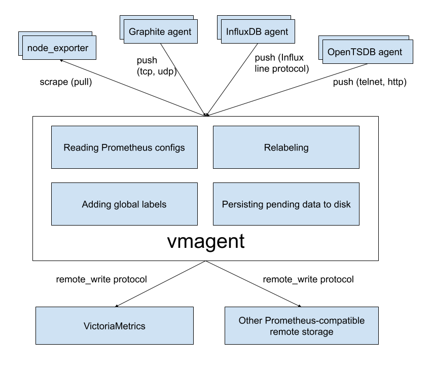

vmagent
vmagent is a tiny but brave agent, which helps you collect metrics from various sources and stores them in VictoriaMetrics or any other Prometheus-compatible storage system that supports the remote_write protocol.

Motivation
While VictoriaMetrics provides an efficient solution to store and observe metrics, our users needed something fast and RAM friendly to scrape metrics from Prometheus-compatible exporters to VictoriaMetrics. Also, we found that users' infrastructure are snowflakes - no two are alike, and we decided to add more flexibility to vmagent (like the ability to push metrics instead of pulling them). We did our best and plan to do even more.
Features
- Can be used as drop-in replacement for Prometheus for scraping targets such as node_exporter. See Quick Start for details.
- Can add, remove and modify labels (aka tags) via Prometheus relabeling. Can filter data before sending it to remote storage. See these docs for details.
- Accepts data via all the ingestion protocols supported by VictoriaMetrics:
- Influx line protocol via
http://<vmagent>:8429/write. See these docs. - Graphite plaintext protocol if
-graphiteListenAddrcommand-line flag is set. See these docs. - OpenTSDB telnet and http protocols if
-opentsdbListenAddrcommand-line flag is set. See these docs. - Prometheus remote write protocol via
http://<vmagent>:8429/api/v1/write. - JSON lines import protocol via
http://<vmagent>:8429/api/v1/import. See these docs. - Native data import protocol via
http://<vmagent>:8429/api/v1/import/native. See these docs. - Data in Prometheus exposition format. See these docs for details.
- Arbitrary CSV data via
http://<vmagent>:8429/api/v1/import/csv. See these docs.
- Influx line protocol via
- Can replicate collected metrics simultaneously to multiple remote storage systems.
- Works in environments with unstable connections to remote storage. If the remote storage is unavailable, the collected metrics are buffered at
-remoteWrite.tmpDataPath. The buffered metrics are sent to remote storage as soon as connection to remote storage is recovered. The maximum disk usage for the buffer can be limited with-remoteWrite.maxDiskUsagePerURL. - Uses lower amounts of RAM, CPU, disk IO and network bandwidth compared to Prometheus.
Quick Start
Just download vmutils-* archive from releases page, unpack it and pass the following flags to vmagent binary in order to start scraping Prometheus targets:
-promscrape.configwith the path to Prometheus config file (it is usually located at/etc/prometheus/prometheus.yml)-remoteWrite.urlwith the remote storage endpoint such as VictoriaMetrics. The-remoteWrite.urlargument can be specified multiple times in order to replicate data concurrently to an arbitrary number of remote storage systems.
Example command line:
/path/to/vmagent -promscrape.config=/path/to/prometheus.yml -remoteWrite.url=https://victoria-metrics-host:8428/api/v1/write
If you only need to collect Influx data, then the following is sufficient:
/path/to/vmagent -remoteWrite.url=https://victoria-metrics-host:8428/api/v1/write
Then send Influx data to http://vmagent-host:8429. See these docs for more details.
vmagent is also available in docker images.
Pass -help to vmagent in order to see the full list of supported command-line flags with their descriptions.
Configuration update
vmagent should be restarted in order to update config options set via command-line args.
vmagent supports multiple approaches for reloading configs from updated config files such as -promscrape.config, -remoteWrite.relabelConfig and -remoteWrite.urlRelabelConfig:
- Sending
SUGHUPsignal tovmagentprocess:kill -SIGHUP `pidof vmagent` - Sending HTTP request to
http://vmagent:8429/-/reloadendpoint.
There is also -promscrape.configCheckInterval command-line option, which can be used for automatic reloading configs from updated -promscrape.config file.
Use cases
IoT and Edge monitoring
vmagent can run and collect metrics in IoT and industrial networks with unreliable or scheduled connections to the remote storage. It buffers the collected data in local files until the connection to remote storage becomes available and then sends the buffered data to the remote storage. It re-tries sending the data to remote storage on any errors. The maximum buffer size can be limited with -remoteWrite.maxDiskUsagePerURL.
vmagent works on various architectures from IoT world - 32-bit arm, 64-bit arm, ppc64, 386, amd64. See the corresponding Makefile rules for details.
Drop-in replacement for Prometheus
If you use Prometheus only for scraping metrics from various targets and forwarding these metrics to remote storage, then vmagent can replace such Prometheus setup. Usually vmagent requires lower amounts of RAM, CPU and network bandwidth comparing to Prometheus for such a setup. See these docs for details.
Replication and high availability
vmagent replicates the collected metrics among multiple remote storage instances configured via -remoteWrite.url args. If a single remote storage instance temporarily is out of service, then the collected data remains available in another remote storage instances. vmagent buffers the collected data in files at -remoteWrite.tmpDataPath until the remote storage becomes available again. Then it sends the buffered data to the remote storage in order to prevent data gaps in the remote storage.
Relabeling and filtering
vmagent can add, remove or update labels on the collected data before sending it to remote storage. Additionally, it can remove unwanted samples via Prometheus-like relabeling before sending the collected data to remote storage. See these docs for details.
Splitting data streams among multiple systems
vmagent supports splitting the collected data between muliple destinations with the help of -remoteWrite.urlRelabelConfig, which is applied independently for each configured -remoteWrite.url destination. For instance, it is possible to replicate or split data among long-term remote storage, short-term remote storage and real-time analytical system built on top of Kafka. Note that each destination can receive its own subset of the collected data thanks to per-destination relabeling via -remoteWrite.urlRelabelConfig.
Prometheus remote_write proxy
vmagent may be used as a proxy for Prometheus data sent via Prometheus remote_write protocol. It can accept data via remote_write API at /api/v1/write endpoint, apply relabeling and filtering and then proxy it to another remote_write systems. The vmagent can be configured to encrypt the incoming remote_write requests with -tls* command-line flags. Additionally, Basic Auth can be enabled for the incoming remote_write requests with -httpAuth.* command-line flags.
remote_write for clustered version
Despite vmagent can accept data in several supported protocols (OpenTSDB, Influx, Prometheus, Graphite) and scrape data from various targets, writes always peformed in Promethes remote_write protocol. Therefore for clustered version -remoteWrite.url command-line flag should be configured as <schema>://<vminsert-host>:8480/insert/<customer-id>/prometheus/api/v1/write
How to collect metrics in Prometheus format
Pass the path to prometheus.yml to -promscrape.config command-line flag. vmagent takes into account the following sections from Prometheus config file:
globalscrape_configs
All the other sections are ignored, including remote_write section. Use -remoteWrite.* command-line flags instead for configuring remote write settings.
The following scrape types in scrape_config section are supported:
static_configs- for scraping statically defined targets. See these docs for details.file_sd_configs- for scraping targets defined in external files aka file-based service discover. See these docs for details.kubernetes_sd_configs- for scraping targets in Kubernetes (k8s). See kubernetes_sd_config for details.ec2_sd_configs- for scraping targets in Amazon EC2. See ec2_sd_config for details.vmagentdoesn't supportprofileconfig param and aws credentials file yet.gce_sd_configs- for scraping targets in Google Compute Engine (GCE). See gce_sd_config for details.vmagentprovides the following additional functionality forgce_sd_config:- if
projectarg is missing, thenvmagentuses the project for the instance where it runs; - if
zonearg is missing, thenvmagentuses the zone for the instance where it runs; - if
zonearg equals to"*", thenvmagentdiscovers all the zones for the given project; zonemay contain arbitrary number of zones, i.e.zone: [us-east1-a, us-east1-b].
- if
consul_sd_configs- for scraping targets registered in Consul. See consul_sd_config for details.dns_sd_configs- for scraping targets discovered from DNS records (SRV, A and AAAA). See dns_sd_config for details.openstack_sd_configs- for scraping OpenStack targets. See openstack_sd_config for details. OpenStack identity API v3 is supported only.dockerswarm_sd_configs- for scraping Docker Swarm targets. See dockerswarm_sd_config for details.eureka_sd_configs- for scraping targets registered in Netflix Eureka. See eureka_sd_config for details.
File feature requests at our issue tracker if you need other service discovery mechanisms to be supported by vmagent.
vmagent also support the following additional options in scrape_config section:
disable_compression: true- for disabling response compression on a per-job basis. By defaultvmagentrequests compressed responses from scrape targets in order to save network bandwidth.disable_keepalive: true- for disabling HTTP keep-alive connections on a per-job basis. By defaultvmagentuses keep-alive connections to scrape targets in order to reduce overhead on connection re-establishing.
Note that vmagent doesn't support refresh_interval option these scrape configs. Use the corresponding -promscrape.*CheckInterval command-line flag instead. For example, -promscrape.consulSDCheckInterval=60s sets refresh_interval for all the consul_sd_configs entries to 60s. Run vmagent -help in order to see default values for -promscrape.*CheckInterval flags.
The file pointed by -promscrape.config may contain %{ENV_VAR} placeholders, which are substituted by the corresponding ENV_VAR environment variable values.
Adding labels to metrics
Labels can be added to metrics via the following mechanisms:
- Via
global -> external_labelssection in-promscrape.configfile. These labels are added only to metrics scraped from targets configured in-promscrape.configfile. - Via
-remoteWrite.labelcommand-line flag. These labels are added to all the collected metrics before sending them to-remoteWrite.url.
Relabeling
vmagent supports Prometheus relabeling. Additionally it provides the following extra actions:
replace_all: replaces all the occurences ofregexin the values ofsource_labelswith thereplacementand stores the result in thetarget_label.labelmap_all: replaces all the occurences ofregexin all the label names with thereplacement.keep_if_equal: keeps the entry if all label values fromsource_labelsare equal.drop_if_equal: drops the entry if all the label values fromsource_labelsare equal.
The relabeling can be defined in the following places:
- At
scrape_config -> relabel_configssection in-promscrape.configfile. This relabeling is applied to target labels. - At
scrape_config -> metric_relabel_configssection in-promscrape.configfile. This relabeling is applied to all the scraped metrics in the givenscrape_config. - At
-remoteWrite.relabelConfigfile. This relabeling is aplied to all the collected metrics before sending them to remote storage. - At
-remoteWrite.urlRelabelConfigfiles. This relabeling is applied to metrics before sending them to the corresponding-remoteWrite.url.
Read more about relabeling in the following articles:
- How to use Relabeling in Prometheus and VictoriaMetrics
- Life of a label
- Discarding targets and timeseries with relabeling
- Dropping labels at scrape time
- Extracting labels from legacy metric names
- relabel_configs vs metric_relabel_configs
Monitoring
vmagent exports various metrics in Prometheus exposition format at http://vmagent-host:8429/metrics page. It is recommended setting up regular scraping of this page either via vmagent itself or via Prometheus, so the exported metrics could be analyzed later. Use official Grafana dashboard for vmagent state overview. If you have suggestions, improvements or found a bug - feel free to open an issue on github or add review to the dashboard.
vmagent also exports target statuses at the following handlers:
http://vmagent-host:8429/targets. This handler returns human-readable plaintext status for every active target. This page is convenient to query from command line withwget,curlor similar tools. It accepts optionalshow_original_labels=1query arg, which shows the original labels per each target before applying relabeling. This information may be useful for debugging target relabeling.-
http://vmagent-host:8429/api/v1/targets. This handler returns data compatible with the corresponding page from Prometheus API. http://vmagent-host:8429/ready. This handler returns http 200 status code whenvmagentfinishes initialization for all service_discovery configs. It may be useful for performingvmagentrolling update without scrape loss.
Troubleshooting
-
It is recommended setting up the official Grafana dashboard in order to monitor
vmagentstate. -
It is recommended increasing the maximum number of open files in the system (
ulimit -n) when scraping big number of targets, sincevmagentestablishes at least a single TCP connection per each target. -
When
vmagentscrapes many unreliable targets, it can flood error log with scrape errors. These errors can be suppressed by passing-promscrape.suppressScrapeErrorscommand-line flag tovmagent. The most recent scrape error per each target can be observed athttp://vmagent-host:8429/targetsandhttp://vmagent-host:8429/api/v1/targets. -
The
/api/v1/targetspage could be useful for debugging relabeling process for scrape targets. This page contains original labels for targets dropped during relabeling (see "droppedTargets" section in the page output). By default up to-promscrape.maxDroppedTargetstargets are shown here. If your setup drops more targets during relabeling, then increase-promscrape.maxDroppedTargetscommand-line flag value in order to see all the dropped targets. Note that tracking each dropped target requires up to 10Kb of RAM, so big values for-promscrape.maxDroppedTargetsmay result in increased memory usage if big number of scrape targets are dropped during relabeling. -
If
vmagentscrapes big number of targets, then-promscrape.dropOriginalLabelscommand-line option may be passed tovmagentin order to reduce memory usage. This option drops"discoveredLabels"and"droppedTargets"lists at/api/v1/targetspage, which may result in reduced debuggability for improperly configured per-target relabeling. -
If
vmagentscrapes targets with millions of metrics per each target (for instance, when scraping federation endpoints), then it is recommended enablingstream parsing modein order to reduce memory usage during scraping. This mode may be enabled either globally for all the scrape targets by passing-promscrape.streamParsecommand-line flag or on a per-scrape target basis withstream_parse: trueoption. For example:scrape_configs: - job_name: 'big-federate' stream_parse: true static_configs: - targets: - big-prometeus1 - big-prometeus2 honor_labels: true metrics_path: /federate params: 'match[]': ['{__name__!=""}']Note that
sample_limitoption doesn't work if stream parsing is enabled, since the parsed data is pushed to remote storage as soon as it is parsed. Sosample_limitoption has no sense during stream parsing. -
It is recommended to increase
-remoteWrite.queuesifvmagent_remotewrite_pending_data_bytesmetric exported athttp://vmagent-host:8429/metricspage constantly grows. -
If you see gaps on the data pushed by
vmagentto remote storage when-remoteWrite.maxDiskUsagePerURLis set, then try increasing-remoteWrite.queues. Such gaps may appear becausevmagentcannot keep up with sending the collected data to remote storage, so it starts dropping the buffered data if the on-disk buffer size exceeds-remoteWrite.maxDiskUsagePerURL. -
vmagentbuffers scraped data at-remoteWrite.tmpDataPathdirectory until it is sent to-remoteWrite.url. The directory can grow large when remote storage is unavailable for extended periods of time and if-remoteWrite.maxDiskUsagePerURLisn't set. If you don't want to send all the data from the directory to remote storage, simply stopvmagentand delete the directory. -
By default
vmagentmasks-remoteWrite.urlwithsecret-urlvalues in logs and at/metricspage because the url may contain sensitive information such as auth tokens or passwords. Pass-remoteWrite.showURLcommand-line flag when startingvmagentin order to see all the valid urls. -
If scrapes must be aligned in time (for instance, if they must be performed at the beginning of every hour), then set
scrape_align_intervaloption in the corresponding scrape config. For example, the following config aligns hourly scrapes to the nearest 10 minutes:scrape_configs: - job_name: foo scrape_interval: 1h scrape_align_interval: 10m -
If you see
skipping duplicate scrape target with identical labelserrors when scraping Kubernetes pods, then it is likely these pods listen multiple ports or they use init container. These errors can be either fixed or suppressed with-promscrape.suppressDuplicateScrapeTargetErrorscommand-line flag. See available options below if you prefer fixing the root cause of the error:The following
relabel_configssection may help determining__meta_*labels resulting in duplicate targets:- action: labelmap regex: __meta_(.*)The following relabeling rule may be added to
relabel_configssection in order to filter out pods with unneeded ports:- action: keep_if_equal source_labels: [__meta_kubernetes_pod_annotation_prometheus_io_port, __meta_kubernetes_pod_container_port_number]The following relabeling rule may be added to
relabel_configssection in order to filter out init container pods:- action: drop source_labels: [__meta_kubernetes_pod_container_init] regex: true
How to build from sources
It is recommended using binary releases - vmagent is located in vmutils-* archives there.
Development build
- Install Go. The minimum supported version is Go 1.13.
- Run
make vmagentfrom the root folder of the repository. It buildsvmagentbinary and puts it into thebinfolder.
Production build
- Install docker.
- Run
make vmagent-prodfrom the root folder of the repository. It buildsvmagent-prodbinary and puts it into thebinfolder.
Building docker images
Run make package-vmagent. It builds victoriametrics/vmagent:<PKG_TAG> docker image locally. <PKG_TAG> is auto-generated image tag, which depends on source code in the repository. The <PKG_TAG> may be manually set via PKG_TAG=foobar make package-vmagent.
The base docker image is alpine but it is possible to use any other base image by setting it via <ROOT_IMAGE> environment variable. For example, the following command builds the image on top of scratch image:
ROOT_IMAGE=scratch make package-vmagent
ARM build
ARM build may run on Raspberry Pi or on energy-efficient ARM servers.
Development ARM build
- Install Go. The minimum supported version is Go 1.13.
- Run
make vmagent-armormake vmagent-arm64from the root folder of the repository. It buildsvmagent-armorvmagent-arm64binary respectively and puts it into thebinfolder.
Production ARM build
- Install docker.
- Run
make vmagent-arm-prodormake vmagent-arm64-prodfrom the root folder of the repository. It buildsvmagent-arm-prodorvmagent-arm64-prodbinary respectively and puts it into thebinfolder.
Profiling
vmagent provides handlers for collecting the following Go profiles:
- Memory profile. It can be collected with the following command:
curl -s http://<vmagent-host>:8429/debug/pprof/heap > mem.pprof
- CPU profile. It can be collected with the following command:
curl -s http://<vmagent-host>:8429/debug/pprof/profile > cpu.pprof
The command for collecting CPU profile waits for 30 seconds before returning.
The collected profiles may be analyzed with go tool pprof.
Advanced usage
vmagent can be fine-tuned with various command-line flags. Run ./vmagent -help in order to see the full list of these flags with their desciptions and default values:
./vmagent -help
vmagent collects metrics data via popular data ingestion protocols and routes it to VictoriaMetrics.
See the docs at https://victoriametrics.github.io/vmagent.html .
-csvTrimTimestamp duration
Trim timestamps when importing csv data to this duration. Minimum practical duration is 1ms. Higher duration (i.e. 1s) may be used for reducing disk space usage for timestamp data (default 1ms)
-dryRun
Whether to check only config files without running vmagent. The following files are checked: -promscrape.config, -remoteWrite.relabelConfig, -remoteWrite.urlRelabelConfig . Unknown config entries are allowed in -promscrape.config by default. This can be changed with -promscrape.config.strictParse
-enableTCP6
Whether to enable IPv6 for listening and dialing. By default only IPv4 TCP is used
-envflag.enable
Whether to enable reading flags from environment variables additionally to command line. Command line flag values have priority over values from environment vars. Flags are read only from command line if this flag isn't set
-envflag.prefix string
Prefix for environment variables if -envflag.enable is set
-fs.disableMmap
Whether to use pread() instead of mmap() for reading data files. By default mmap() is used for 64-bit arches and pread() is used for 32-bit arches, since they cannot read data files bigger than 2^32 bytes in memory. mmap() is usually faster for reading small data chunks than pread()
-graphiteListenAddr string
TCP and UDP address to listen for Graphite plaintext data. Usually :2003 must be set. Doesn't work if empty
-graphiteTrimTimestamp duration
Trim timestamps for Graphite data to this duration. Minimum practical duration is 1s. Higher duration (i.e. 1m) may be used for reducing disk space usage for timestamp data (default 1s)
-http.connTimeout duration
Incoming http connections are closed after the configured timeout. This may help spreading incoming load among a cluster of services behind load balancer. Note that the real timeout may be bigger by up to 10% as a protection from Thundering herd problem (default 2m0s)
-http.disableResponseCompression
Disable compression of HTTP responses for saving CPU resources. By default compression is enabled to save network bandwidth
-http.idleConnTimeout duration
Timeout for incoming idle http connections (default 1m0s)
-http.maxGracefulShutdownDuration duration
The maximum duration for graceful shutdown of HTTP server. Highly loaded server may require increased value for graceful shutdown (default 7s)
-http.pathPrefix string
An optional prefix to add to all the paths handled by http server. For example, if '-http.pathPrefix=/foo/bar' is set, then all the http requests will be handled on '/foo/bar/*' paths. This may be useful for proxied requests. See https://www.robustperception.io/using-external-urls-and-proxies-with-prometheus
-http.shutdownDelay duration
Optional delay before http server shutdown. During this dealy the servier returns non-OK responses from /health page, so load balancers can route new requests to other servers
-httpAuth.password string
Password for HTTP Basic Auth. The authentication is disabled if -httpAuth.username is empty
-httpAuth.username string
Username for HTTP Basic Auth. The authentication is disabled if empty. See also -httpAuth.password
-httpListenAddr string
TCP address to listen for http connections. Set this flag to empty value in order to disable listening on any port. This mode may be useful for running multiple vmagent instances on the same server. Note that /targets and /metrics pages aren't available if -httpListenAddr='' (default ":8429")
-import.maxLineLen max_rows_per_line
The maximum length in bytes of a single line accepted by /api/v1/import; the line length can be limited with max_rows_per_line query arg passed to /api/v1/export
Supports the following optional suffixes for values: KB, MB, GB, KiB, MiB, GiB (default 104857600)
-influx.maxLineSize value
The maximum size in bytes for a single Influx line during parsing
Supports the following optional suffixes for values: KB, MB, GB, KiB, MiB, GiB (default 262144)
-influxListenAddr http://<vmagent>:8429/write
TCP and UDP address to listen for Influx line protocol data. Usually :8189 must be set. Doesn't work if empty. This flag isn't needed when ingesting data over HTTP - just send it to http://<vmagent>:8429/write
-influxMeasurementFieldSeparator string
Separator for '{measurement}{separator}{field_name}' metric name when inserted via Influx line protocol (default "_")
-influxSkipMeasurement
Uses '{field_name}' as a metric name while ignoring '{measurement}' and '-influxMeasurementFieldSeparator'
-influxSkipSingleField
Uses '{measurement}' instead of '{measurement}{separator}{field_name}' for metic name if Influx line contains only a single field
-influxTrimTimestamp duration
Trim timestamps for Influx line protocol data to this duration. Minimum practical duration is 1ms. Higher duration (i.e. 1s) may be used for reducing disk space usage for timestamp data (default 1ms)
-insert.maxQueueDuration duration
The maximum duration for waiting in the queue for insert requests due to -maxConcurrentInserts (default 1m0s)
-loggerDisableTimestamps
Whether to disable writing timestamps in logs
-loggerErrorsPerSecondLimit int
Per-second limit on the number of ERROR messages. If more than the given number of errors are emitted per second, then the remaining errors are suppressed. Zero value disables the rate limit
-loggerFormat string
Format for logs. Possible values: default, json (default "default")
-loggerLevel string
Minimum level of errors to log. Possible values: INFO, WARN, ERROR, FATAL, PANIC (default "INFO")
-loggerOutput string
Output for the logs. Supported values: stderr, stdout (default "stderr")
-loggerTimezone string
Timezone to use for timestamps in logs. Local timezone can be used (default "UTC")
-loggerWarnsPerSecondLimit int
Per-second limit on the number of WARN messages. If more than the given number of warns are emitted per second, then the remaining warns are suppressed. Zero value disables the rate limit
-maxConcurrentInserts int
The maximum number of concurrent inserts. Default value should work for most cases, since it minimizes the overhead for concurrent inserts. This option is tigthly coupled with -insert.maxQueueDuration (default 16)
-maxInsertRequestSize value
The maximum size in bytes of a single Prometheus remote_write API request
Supports the following optional suffixes for values: KB, MB, GB, KiB, MiB, GiB (default 33554432)
-memory.allowedBytes value
Allowed size of system memory VictoriaMetrics caches may occupy. This option overrides -memory.allowedPercent if set to non-zero value. Too low value may increase cache miss rate, which usually results in higher CPU and disk IO usage. Too high value may evict too much data from OS page cache, which will result in higher disk IO usage
Supports the following optional suffixes for values: KB, MB, GB, KiB, MiB, GiB (default 0)
-memory.allowedPercent float
Allowed percent of system memory VictoriaMetrics caches may occupy. See also -memory.allowedBytes. Too low value may increase cache miss rate, which usually results in higher CPU and disk IO usage. Too high value may evict too much data from OS page cache, which will result in higher disk IO usage (default 60)
-metricsAuthKey string
Auth key for /metrics. It overrides httpAuth settings
-opentsdbHTTPListenAddr string
TCP address to listen for OpentTSDB HTTP put requests. Usually :4242 must be set. Doesn't work if empty
-opentsdbListenAddr string
TCP and UDP address to listen for OpentTSDB metrics. Telnet put messages and HTTP /api/put messages are simultaneously served on TCP port. Usually :4242 must be set. Doesn't work if empty
-opentsdbTrimTimestamp duration
Trim timestamps for OpenTSDB 'telnet put' data to this duration. Minimum practical duration is 1s. Higher duration (i.e. 1m) may be used for reducing disk space usage for timestamp data (default 1s)
-opentsdbhttp.maxInsertRequestSize value
The maximum size of OpenTSDB HTTP put request
Supports the following optional suffixes for values: KB, MB, GB, KiB, MiB, GiB (default 33554432)
-opentsdbhttpTrimTimestamp duration
Trim timestamps for OpenTSDB HTTP data to this duration. Minimum practical duration is 1ms. Higher duration (i.e. 1s) may be used for reducing disk space usage for timestamp data (default 1ms)
-pprofAuthKey string
Auth key for /debug/pprof. It overrides httpAuth settings
-promscrape.config string
Optional path to Prometheus config file with 'scrape_configs' section containing targets to scrape. See https://victoriametrics.github.io/#how-to-scrape-prometheus-exporters-such-as-node-exporter for details
-promscrape.config.dryRun
Checks -promscrape.config file for errors and unsupported fields and then exits. Returns non-zero exit code on parsing errors and emits these errors to stderr. See also -promscrape.config.strictParse command-line flag. Pass -loggerLevel=ERROR if you don't need to see info messages in the output.
-promscrape.config.strictParse
Whether to allow only supported fields in -promscrape.config . By default unsupported fields are silently skipped
-promscrape.configCheckInterval duration
Interval for checking for changes in '-promscrape.config' file. By default the checking is disabled. Send SIGHUP signal in order to force config check for changes
-promscrape.consulSDCheckInterval consul_sd_configs
Interval for checking for changes in Consul. This works only if consul_sd_configs is configured in '-promscrape.config' file. See https://prometheus.io/docs/prometheus/latest/configuration/configuration/#consul_sd_config for details (default 30s)
-promscrape.disableCompression
Whether to disable sending 'Accept-Encoding: gzip' request headers to all the scrape targets. This may reduce CPU usage on scrape targets at the cost of higher network bandwidth utilization. It is possible to set 'disable_compression: true' individually per each 'scrape_config' section in '-promscrape.config' for fine grained control
-promscrape.disableKeepAlive disable_keepalive: true
Whether to disable HTTP keep-alive connections when scraping all the targets. This may be useful when targets has no support for HTTP keep-alive connection. It is possible to set disable_keepalive: true individually per each 'scrape_config` section in '-promscrape.config' for fine grained control. Note that disabling HTTP keep-alive may increase load on both vmagent and scrape targets
-promscrape.discovery.concurrency int
The maximum number of concurrent requests to Prometheus autodiscovery API (Consul, Kubernetes, etc.) (default 100)
-promscrape.discovery.concurrentWaitTime duration
The maximum duration for waiting to perform API requests if more than -promscrape.discovery.concurrency requests are simultaneously performed (default 1m0s)
-promscrape.dnsSDCheckInterval dns_sd_configs
Interval for checking for changes in dns. This works only if dns_sd_configs is configured in '-promscrape.config' file. See https://prometheus.io/docs/prometheus/latest/configuration/configuration/#dns_sd_config for details (default 30s)
-promscrape.dockerswarmSDCheckInterval dockerswarm_sd_configs
Interval for checking for changes in dockerswarm. This works only if dockerswarm_sd_configs is configured in '-promscrape.config' file. See https://prometheus.io/docs/prometheus/latest/configuration/configuration/#dockerswarm_sd_config for details (default 30s)
-promscrape.dropOriginalLabels
Whether to drop original labels for scrape targets at /targets and /api/v1/targets pages. This may be needed for reducing memory usage when original labels for big number of scrape targets occupy big amounts of memory. Note that this reduces debuggability for improper per-target relabeling configs
-promscrape.ec2SDCheckInterval ec2_sd_configs
Interval for checking for changes in ec2. This works only if ec2_sd_configs is configured in '-promscrape.config' file. See https://prometheus.io/docs/prometheus/latest/configuration/configuration/#ec2_sd_config for details (default 1m0s)
-promscrape.eurekaSDCheckInterval eureka_sd_configs
Interval for checking for changes in eureka. This works only if eureka_sd_configs is configured in '-promscrape.config' file. See https://prometheus.io/docs/prometheus/latest/configuration/configuration/#eureka_sd_config for details (default 30s)
-promscrape.fileSDCheckInterval duration
Interval for checking for changes in 'file_sd_config'. See https://prometheus.io/docs/prometheus/latest/configuration/configuration/#file_sd_config for details (default 30s)
-promscrape.gceSDCheckInterval gce_sd_configs
Interval for checking for changes in gce. This works only if gce_sd_configs is configured in '-promscrape.config' file. See https://prometheus.io/docs/prometheus/latest/configuration/configuration/#gce_sd_config for details (default 1m0s)
-promscrape.kubernetesSDCheckInterval kubernetes_sd_configs
Interval for checking for changes in Kubernetes API server. This works only if kubernetes_sd_configs is configured in '-promscrape.config' file. See https://prometheus.io/docs/prometheus/latest/configuration/configuration/#kubernetes_sd_config for details (default 30s)
-promscrape.maxDroppedTargets droppedTargets
The maximum number of droppedTargets shown at /api/v1/targets page. Increase this value if your setup drops more scrape targets during relabeling and you need investigating labels for all the dropped targets. Note that the increased number of tracked dropped targets may result in increased memory usage (default 1000)
-promscrape.maxScrapeSize value
The maximum size of scrape response in bytes to process from Prometheus targets. Bigger responses are rejected
Supports the following optional suffixes for values: KB, MB, GB, KiB, MiB, GiB (default 16777216)
-promscrape.openstackSDCheckInterval openstack_sd_configs
Interval for checking for changes in openstack API server. This works only if openstack_sd_configs is configured in '-promscrape.config' file. See https://prometheus.io/docs/prometheus/latest/configuration/configuration/#openstack_sd_config for details (default 30s)
-promscrape.streamParse stream_parse: true
Whether to enable stream parsing for metrics obtained from scrape targets. This may be useful for reducing memory usage when millions of metrics are exposed per each scrape target. It is posible to set stream_parse: true individually per each `scrape_config` section in `-promscrape.config` for fine grained control
-promscrape.suppressDuplicateScrapeTargetErrors duplicate scrape target
Whether to suppress duplicate scrape target errors; see https://victoriametrics.github.io/vmagent.html#troubleshooting for details
-promscrape.suppressScrapeErrors
Whether to suppress scrape errors logging. The last error for each target is always available at '/targets' page even if scrape errors logging is suppressed
-remoteWrite.basicAuth.password array
Optional basic auth password to use for -remoteWrite.url. If multiple args are set, then they are applied independently for the corresponding -remoteWrite.url
Supports array of values separated by comma or specified via multiple flags.
-remoteWrite.basicAuth.username array
Optional basic auth username to use for -remoteWrite.url. If multiple args are set, then they are applied independently for the corresponding -remoteWrite.url
Supports array of values separated by comma or specified via multiple flags.
-remoteWrite.bearerToken array
Optional bearer auth token to use for -remoteWrite.url. If multiple args are set, then they are applied independently for the corresponding -remoteWrite.url
Supports array of values separated by comma or specified via multiple flags.
-remoteWrite.flushInterval duration
Interval for flushing the data to remote storage. Higher value reduces network bandwidth usage at the cost of delayed push of scraped data to remote storage. Minimum supported interval is 1 second (default 1s)
-remoteWrite.label array
Optional label in the form 'name=value' to add to all the metrics before sending them to -remoteWrite.url. Pass multiple -remoteWrite.label flags in order to add multiple flags to metrics before sending them to remote storage
Supports array of values separated by comma or specified via multiple flags.
-remoteWrite.maxBlockSize value
The maximum size in bytes of unpacked request to send to remote storage. It shouldn't exceed -maxInsertRequestSize from VictoriaMetrics
Supports the following optional suffixes for values: KB, MB, GB, KiB, MiB, GiB (default 8388608)
-remoteWrite.maxDiskUsagePerURL value
The maximum file-based buffer size in bytes at -remoteWrite.tmpDataPath for each -remoteWrite.url. When buffer size reaches the configured maximum, then old data is dropped when adding new data to the buffer. Buffered data is stored in ~500MB chunks, so the minimum practical value for this flag is 500000000. Disk usage is unlimited if the value is set to 0
Supports the following optional suffixes for values: KB, MB, GB, KiB, MiB, GiB (default 0)
-remoteWrite.proxyURL array
Optional proxy URL for writing data to -remoteWrite.url. Supported proxies: http, https, socks5. Example: -remoteWrite.proxyURL=socks5://proxy:1234
Supports array of values separated by comma or specified via multiple flags.
-remoteWrite.queues int
The number of concurrent queues to each -remoteWrite.url. Set more queues if default number of queues isn't enough for sending high volume of collected data to remote storage (default 4)
-remoteWrite.rateLimit array
Optional rate limit in bytes per second for data sent to -remoteWrite.url. By default the rate limit is disabled. It can be useful for limiting load on remote storage when big amounts of buffered data is sent after temporary unavailability of the remote storage
Supports array of values separated by comma or specified via multiple flags.
-remoteWrite.relabelConfig string
Optional path to file with relabel_config entries. These entries are applied to all the metrics before sending them to -remoteWrite.url. See https://victoriametrics.github.io/vmagent.html#relabeling for details
-remoteWrite.roundDigits array
Round metric values to this number of decimal digits after the point before writing them to remote storage. Examples: -remoteWrite.roundDigits=2 would round 1.236 to 1.24, while -remoteWrite.roundDigits=-1 would round 126.78 to 130. By default digits rounding is disabled. Set it to 100 for disabling it for a particular remote storage. This option may be used for improving data compression for the stored metrics
Supports array of values separated by comma or specified via multiple flags.
-remoteWrite.sendTimeout array
Timeout for sending a single block of data to -remoteWrite.url
Supports array of values separated by comma or specified via multiple flags.
-remoteWrite.showURL
Whether to show -remoteWrite.url in the exported metrics. It is hidden by default, since it can contain sensitive info such as auth key
-remoteWrite.significantFigures array
The number of significant figures to leave in metric values before writing them to remote storage. See https://en.wikipedia.org/wiki/Significant_figures . Zero value saves all the significant figures. This option may be used for improving data compression for the stored metrics. See also -remoteWrite.roundDigits
Supports array of values separated by comma or specified via multiple flags.
-remoteWrite.tlsCAFile array
Optional path to TLS CA file to use for verifying connections to -remoteWrite.url. By default system CA is used. If multiple args are set, then they are applied independently for the corresponding -remoteWrite.url
Supports array of values separated by comma or specified via multiple flags.
-remoteWrite.tlsCertFile array
Optional path to client-side TLS certificate file to use when connecting to -remoteWrite.url. If multiple args are set, then they are applied independently for the corresponding -remoteWrite.url
Supports array of values separated by comma or specified via multiple flags.
-remoteWrite.tlsInsecureSkipVerify array
Whether to skip tls verification when connecting to -remoteWrite.url
Supports array of values separated by comma or specified via multiple flags.
-remoteWrite.tlsKeyFile array
Optional path to client-side TLS certificate key to use when connecting to -remoteWrite.url. If multiple args are set, then they are applied independently for the corresponding -remoteWrite.url
Supports array of values separated by comma or specified via multiple flags.
-remoteWrite.tlsServerName array
Optional TLS server name to use for connections to -remoteWrite.url. By default the server name from -remoteWrite.url is used. If multiple args are set, then they are applied independently for the corresponding -remoteWrite.url
Supports array of values separated by comma or specified via multiple flags.
-remoteWrite.tmpDataPath string
Path to directory where temporary data for remote write component is stored (default "vmagent-remotewrite-data")
-remoteWrite.url array
Remote storage URL to write data to. It must support Prometheus remote_write API. It is recommended using VictoriaMetrics as remote storage. Example url: http://<victoriametrics-host>:8428/api/v1/write . Pass multiple -remoteWrite.url flags in order to write data concurrently to multiple remote storage systems
Supports array of values separated by comma or specified via multiple flags.
-remoteWrite.urlRelabelConfig array
Optional path to relabel config for the corresponding -remoteWrite.url
Supports array of values separated by comma or specified via multiple flags.
-tls
Whether to enable TLS (aka HTTPS) for incoming requests. -tlsCertFile and -tlsKeyFile must be set if -tls is set
-tlsCertFile string
Path to file with TLS certificate. Used only if -tls is set. Prefer ECDSA certs instead of RSA certs, since RSA certs are slow
-tlsKeyFile string
Path to file with TLS key. Used only if -tls is set
-version
Show VictoriaMetrics version